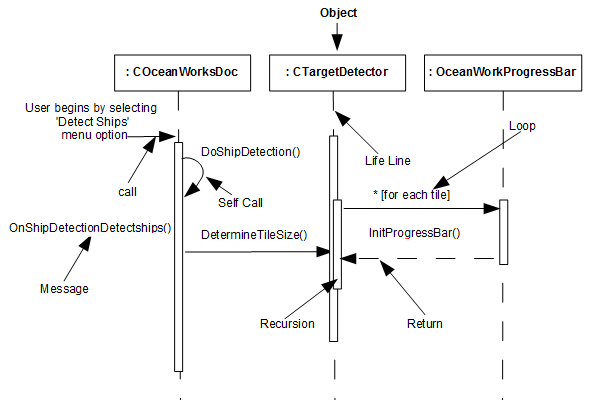
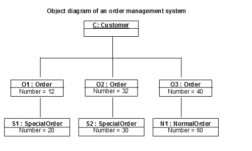
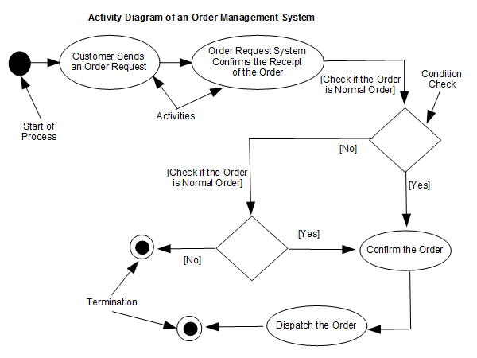

A Code Journal for
Hub Pages
View the Code Journal on GitHub
Repositories and latest Contribution Activity
A Code Journal for
Hub Pages
View the Code Journal on GitHub
Last updated on January 1st, 2019
The Unified Modeling Language (UML) is a general-purpose, developmental, modeling language in the field of software engineering, that is intended to provide a standard way to visualize the design of a system.
The creation of UML was originally motivated by the desire to standardize the disparate notational systems and approaches to software design. In 1997 UML was adopted as a standard by the Object Management Group (OMG), and has been managed by this organization ever since. In 2005 UML was also published by the International Organization for Standardization (ISO) as an approved ISO standard. Since then the standard has been periodically revised to cover the latest revision of UML.
UML is not a programming language but tools can be used to generate code in various languages using UML diagrams. UML has a direct relation with object oriented analysis and design. After some standardization, UML has become an OMG standard.
A picture is worth a thousand words, this idiom absolutely fits describing UML. Object-oriented concepts were introduced much earlier than UML. At that point of time, there were no standard methodologies to organize and consolidate the object-oriented development. It was then that UML came into picture.
There are a number of goals for developing UML but the most important is to define some general purpose modeling language, which all modelers can use and it also needs to be made simple to understand and use.
UML diagrams are not only made for developers but also for business users, common people, and anybody interested to understand the system. The system can be a software or non-software system. Thus it must be clear that UML is not a development method rather it accompanies with processes to make it a successful system.
In conclusion, the goal of UML can be defined as a simple modeling mechanism to model all possible practical systems in today’s complex environment.
To understand the conceptual model of UML, first we need to clarify what is a conceptual model? and why a conceptual model is required?
A conceptual model can be defined as a model which is made of concepts and their relationships.
A conceptual model is the first step before drawing a UML diagram. It helps to understand the entities in the real world and how they interact with each other.
As UML describes the real-time systems, it is very important to make a conceptual model and then proceed gradually. The conceptual model of UML can be mastered by learning the following three major elements:
UML can be described as the successor of object-oriented (OO) analysis and design.
An object contains both data and methods that control the data. The data represents the state of the object. A class describes an object and they also form a hierarchy to model the real-world system. The hierarchy is represented as inheritance and the classes can also be associated in different ways as per the requirement.
Objects are the real-world entities that exist around us and the basic concepts such as abstraction, encapsulation, inheritance, and polymorphism all can be represented using UML.
UML is powerful enough to represent all the concepts that exist in object-oriented analysis and design. UML diagrams are representation of object-oriented concepts only. Thus, before learning UML, it becomes important to understand OO concept in detail.
Following are some fundamental concepts of the object-oriented world:
OO can be defined as an investigation and to be more specific, it is the investigation of objects. Design means collaboration of identified objects.
Thus, it is important to understand the OO analysis and design concepts. The most important purpose of OO analysis is to identify objects of a system to be designed. This analysis is also done for an existing system. Now an efficient analysis is only possible when we are able to start thinking in a way where objects can be identified. After identifying the objects, their relationships are identified and finally the design is produced.
The purpose of OO analysis and design can described as:
There are three basic steps where the OO concepts are applied and implemented. The steps can be defined as
OO Analysis → OO Design → OO implementation using OO languages
The above three points can be described in detail as:
UML is a modeling language used to model software and non-software systems. Although UML is used for non-software systems, the emphasis is on modeling OO software applications. Most of the UML diagrams discussed so far are used to model different aspects such as static, dynamic, etc. Now whatever be the aspect, the artifacts are nothing but objects.
If we look into class diagram, object diagram, collaboration diagram, interaction diagrams all would basically be designed based on the objects.
Hence, the relation between OO design and UML is very important to understand. The OO design is transformed into UML diagrams according to the requirement. Before understanding the UML in detail, the OO concept should be learned properly. Once the OO analysis and design is done, the next step is very easy. The input from OO analysis and design is the input to UML diagrams.
As UML describes the real-time systems, it is very important to make a conceptual model and then proceed gradually. The conceptual model of UML can be mastered by learning the following three major elements:
This chapter describes all the UML building blocks. The building blocks of UML can be defined as:
Things are the most important building blocks of UML. Things can be:
Structural things define the static part of the model. They represent the physical and conceptual elements. Following are the brief descriptions of the structural things.
A behavioral thing consists of the dynamic parts of UML models. Following are the behavioral things:
Grouping things can be defined as a mechanism to group elements of a UML model together. There is only one grouping thing available:
Annotational things can be defined as a mechanism to capture remarks, descriptions, and comments of UML model elements.
Relationship is another most important building block of UML. It shows how the elements are associated with each other and this association describes the functionality of an application.
There are four kinds of relationships available.
Dependency is a relationship between two things in which change in one element also affects the other.
Association is basically a set of links that connects the elements of a UML model. It also describes how many objects are taking part in that relationship.
Generalization can be defined as a relationship which connects a specialized element with a generalized element. It basically describes the inheritance relationship in the world of objects.

Realization can be defined as a relationship in which two elements are connected. One element describes some responsibility, which is not implemented and the other one implements them. This relationship exists in case of interfaces.
UML is popular for its diagrammatic notations. We all know that UML is for visualizing, specifying, constructing and documenting the components of software and non-software systems. Hence, visualization is the most important part which needs to be understood and remembered.
UML notations are the most important elements in modeling. Efficient and appropriate use of notations is very important for making a complete and meaningful model. The model is useless, unless its purpose is depicted properly.
Hence, learning notations should be emphasized from the very beginning. Different notations are available for things and relationships. UML diagrams are made using the notations of things and relationships. Extensibility is another important feature which makes UML more powerful and flexible.
Graphical notations used in structural things are most widely used in UML. These are considered as the nouns of UML models. Following are the list of structural things.
UML class is represented by the following figure. The diagram is divided into four parts.
Classes are used to represent objects. Objects can be anything having properties and responsibility.
The object is represented in the same way as the class. The only difference is the name which is underlined as shown in the following figure.
As the object is an actual implementation of a class, which is known as the instance of a class. Hence, it has the same usage as the class.
Interface is represented by a circle as shown in the following figure. It has a name which is generally written below the circle.

Interface is used to describe the functionality without implementation. Interface is just like a template where you define different functions, not the implementation. When a class implements the interface, it also implements the functionality as per requirement.
Collaboration is represented by a dotted eclipse as shown in the following figure. It has a name written inside the eclipse.
Collaboration represents responsibilities. Generally, responsibilities are in a group.
Use case is represented as an eclipse with a name inside it. It may contain additional responsibilities.
Use case is used to capture high level functionalities of a system.
An actor can be defined as some internal or external entity that interacts with the system.
An actor is used in a use case diagram to describe the internal or external entities.
Initial state is defined to show the start of a process. This notation is used in almost all diagrams. The usage of Initial State Notation is to show the starting point of a process.
Final state is used to show the end of a process. This notation is also used in almost all diagrams to describe the end. The usage of Final State Notation is to show the termination point of a process.
Active class looks similar to a class with a solid border. Active class is generally used to describe the concurrent behavior of a system.
Active class is used to represent the concurrency in a system.
A component in UML is shown in the following figure with a name inside. Additional elements can be added wherever required.
Component is used to represent any part of a system for which UML diagrams are made.
A node in UML is represented by a square box as shown in the following figure with a name. A node represents the physical component of the system.
Node is used to represent the physical part of a system such as the server, network, etc.
Dynamic parts are one of the most important elements in UML. UML has a set of powerful features to represent the dynamic part of software and non-software systems. These features include interactions and state machines.
Interactions can be of two types:
Interaction is basically a message exchange between two UML components. The following diagram represents different notations used in an interaction.
Interaction is used to represent the communication among the components of a system.
State machine describes the different states of a component in its life cycle. The notations are described in the following diagram.
State machine is used to describe different states of a system component. The state can be active, idle, or any other depending upon the situation.
Organizing the UML models is one of the most important aspects of the design. In UML, there is only one element available for grouping and that is package.
Package notation is shown in the following figure and is used to wrap the components of a system.
In any diagram, explanation of different elements and their functionalities are very important. Hence, UML has notes notation to support this requirement.
This notation is shown in the following figure. These notations are used to provide necessary information of a system.
A model is not complete unless the relationships between elements are described properly. The Relationship gives a proper meaning to a UML model. Following are the different types of relationships available in UML.
Dependency is an important aspect in UML elements. It describes the dependent elements and the direction of dependency.
Dependency is represented by a dotted arrow as shown in the following figure. The arrow head represents the independent element and the other end represents the dependent element.
Dependency is used to represent the dependency between two elements of a system
Association describes how the elements in a UML diagram are associated. In simple words, it describes how many elements are taking part in an interaction.
Association is represented by a dotted line with (without) arrows on both sides. The two ends represent two associated elements as shown in the following figure. The multiplicity is also mentioned at the ends (1, *, etc.) to show how many objects are associated.
Association is used to represent the relationship between two elements of a system.
Generalization describes the inheritance relationship of the object-oriented world. It is a parent and child relationship.
Generalization is represented by an arrow with a hollow arrow head as shown in the following figure. One end represents the parent element and the other end represents the child element.
Generalization is used to describe parent-child relationship of two elements of a system.
All the languages (programming or modeling) have some mechanism to extend its capabilities such as syntax, semantics, etc. UML also has the following mechanisms to provide extensibility features.
Extensibility notations are used to enhance the power of the language. It is basically additional elements used to represent some extra behavior of the system. These extra behaviors are not covered by the standard available notations.
UML diagrams are the ultimate output of the entire discussion. All the elements, relationships are used to make a complete UML diagram and the diagram represents a system.
The visual effect of the UML diagram is the most important part of the entire process. All the other elements are used to make it complete.
UML includes the following nine diagrams, the details of which are described in the subsequent chapters.
Any real-world system is used by different users. The users can be developers, testers, business people, analysts, and many more. Hence, before designing a system, the architecture is made with different perspectives in mind. The most important part is to visualize the system from the perspective of different viewers. The better we understand the better we can build the system.
UML plays an important role in defining different perspectives of a system. These perspectives are:
The center is the Use Case view which connects all these four. A Use Case represents the functionality of the system. Hence, other perspectives are connected with use case.
Design of a system consists of classes, interfaces, and collaboration. UML provides class diagram, object diagram to support this.
Implementation defines the components assembled together to make a complete physical system. UML component diagram is used to support the implementation perspective.
Process defines the flow of the system. Hence, the same elements as used in Design are also used to support this perspective.
Deployment represents the physical nodes of the system that forms the hardware. UML deployment diagram is used to support this perspective.
It is very important to distinguish between the UML model. Different diagrams are used for different types of UML modeling. There are three important types of UML modeling.
Structural modeling captures the static features of a system. They consist of the following:
Structural model represents the framework for the system and this framework is the place where all other components exist. Hence, the class diagram, component diagram and deployment diagrams are part of structural modeling. They all represent the elements and the mechanism to assemble them.
The structural model never describes the dynamic behavior of the system. Class diagram is the most widely used structural diagram.
Behavioral model describes the interaction in the system. It represents the interaction among the structural diagrams. Behavioral modeling shows the dynamic nature of the system. They consist of the following:
All the above show the dynamic sequence of flow in a system.
Architectural model represents the overall framework of the system. It contains both structural and behavioral elements of the system. Architectural model can be defined as the blueprint of the entire system. Package diagram comes under architectural modeling.
The elements are like components which can be associated in different ways to make a complete UML picture, which is known as diagram. Thus, it is very important to understand the different diagrams to implement the knowledge in real-life systems.
Any complex system is best understood by making some kind of diagrams or pictures. These diagrams have a better impact on our understanding. If we look around, we will realize that the diagrams are not a new concept but it is used widely in different forms in different industries.
We prepare UML diagrams to understand the system in a better and simple way. A single diagram is not enough to cover all the aspects of the system. UML defines various kinds of diagrams to cover most of the aspects of a system.
You can also create your own set of diagrams to meet your requirements. Diagrams are generally made in an incremental and iterative way.
There are two broad categories of diagrams and they are again divided into subcategories:
The structural diagrams represent the static aspect of the system. These static aspects represent those parts of a diagram, which forms the main structure and are therefore stable.
These static parts are represented by classes, interfaces, objects, components, and nodes. The four structural diagrams are:
Class diagrams are the most common diagrams used in UML. Class diagram consists of classes, interfaces, associations, and collaboration. Class diagrams basically represent the object-oriented view of a system, which is static in nature.
Active class is used in a class diagram to represent the concurrency of the system.
Class diagram represents the object orientation of a system. Hence, it is generally used for development purpose. This is the most widely used diagram at the time of system construction.
Class diagram is a static diagram. It represents the static view of an application. Class diagram is not only used for visualizing, describing, and documenting different aspects of a system but also for constructing executable code of the software application.
Class diagram describes the attributes and operations of a class and also the constraints imposed on the system. The class diagrams are widely used in the modeling of object oriented systems because they are the only UML diagrams, which can be mapped directly with object-oriented languages.
Class diagram shows a collection of classes, interfaces, associations, collaborations, and constraints. It is also known as a structural diagram.
The purpose of class diagram is to model the static view of an application. Class diagrams are the only diagrams which can be directly mapped with object-oriented languages and thus widely used at the time of construction.
UML diagrams like activity diagram, sequence diagram can only give the sequence flow of the application, however class diagram is a bit different. It is the most popular UML diagram in the coder community.
The purpose of the class diagram can be summarized as:
Class diagrams are the most popular UML diagrams used for construction of software applications. It is very important to learn the drawing procedure of class diagram.
Class diagrams have a lot of properties to consider while drawing but here the diagram will be considered from a top level view.
Class diagram is basically a graphical representation of the static view of the system and represents different aspects of the application. A collection of class diagrams represent the whole system.
The following points should be remembered while drawing a class diagram:
The following diagram is an example of an Order System of an application. It describes a particular aspect of the entire application.
The following class diagram has been drawn considering all the points mentioned above.

Class diagram is a static diagram and it is used to model the static view of a system. The static view describes the vocabulary of the system.
Class diagram is also considered as the foundation for component and deployment diagrams. Class diagrams are not only used to visualize the static view of the system but they are also used to construct the executable code for forward and reverse engineering of any system.
Generally, UML diagrams are not directly mapped with any object-oriented programming languages but the class diagram is an exception.
Class diagram clearly shows the mapping with object-oriented languages such as Java, C++, etc. From practical experience, class diagram is generally used for construction purpose.
In a nutshell it can be said, class diagrams are used for:
Object diagrams can be described as an instance of class diagram. Thus, these diagrams are more close to real-life scenarios where we implement a system.
Object diagrams are a set of objects and their relationship is just like class diagrams. They also represent the static view of the system.
The usage of object diagrams is similar to class diagrams but they are used to build prototype of a system from a practical perspective.
Object diagrams are derived from class diagrams so object diagrams are dependent upon class diagrams.
Object diagrams represent an instance of a class diagram. The basic concepts are similar for class diagrams and object diagrams. Object diagrams also represent the static view of a system but this static view is a snapshot of the system at a particular moment.
Object diagrams are used to render a set of objects and their relationships as an instance.
The purpose of a diagram should be understood clearly to implement it practically. The purposes of object diagrams are similar to class diagrams.
The difference is that a class diagram represents an abstract model consisting of classes and their relationships. However, an object diagram represents an instance at a particular moment, which is concrete in nature.
It means the object diagram is closer to the actual system behavior. The purpose is to capture the static view of a system at a particular moment.
The purpose of the object diagram can be summarized as:
We have already discussed that an object diagram is an instance of a class diagram. It implies that an object diagram consists of instances of things used in a class diagram.
So both diagrams are made of same basic elements but in different form. In class diagram elements are in abstract form to represent the blue print and in object diagram the elements are in concrete form to represent the real world object.
To capture a particular system, numbers of class diagrams are limited. However, if we consider object diagrams then we can have unlimited number of instances, which are unique in nature. Only those instances are considered, which have an impact on the system.
From the above discussion, it is clear that a single object diagram cannot capture all the necessary instances or rather cannot specify all the objects of a system. Hence, the solution is:
Before drawing an object diagram, the following things should be remembered and understood clearly:
After this, the following things are to be decided before starting the construction of the diagram:
The following diagram is an example of an object diagram. It represents the Order management system which we have discussed in the chapter Class Diagram. The following diagram is an instance of the system at a particular time of purchase. It has the following objects.
Now the customer object (C) is associated with three order objects (O1, O2, and O3). These order objects are associated with special order and normal order objects (S1, S2, and N1). The customer has the following three orders with different numbers (12, 32 and 40) for the particular time considered.
The customer can increase the number of orders in future and in that scenario the object diagram will reflect that. If order, special order, and normal order objects are observed then you will find that they have some values.
For orders, the values are 12, 32, and 40 which implies that the objects have these values for a particular moment (here the particular time when the purchase is made is considered as the moment) when the instance is captured
The same is true for special order and normal order objects which have number of orders as 20, 30, and 60. If a different time of purchase is considered, then these values will change accordingly.
The following object diagram has been drawn considering all the points mentioned above
Object diagrams can be imagined as the snapshot of a running system at a particular moment. Let us consider an example of a running train
Now, if you take a snap of the running train then you will find a static picture of it having the following:
Here, we can imagine the snap of the running train is an object having the above values. And this is true for any real-life simple or complex system.
In a nutshell, it can be said that object diagrams are used for:
Component diagrams represent a set of components and their relationships. These components consist of classes, interfaces, or collaborations. Component diagrams represent the implementation view of a system.
During the design phase, software artifacts (classes, interfaces, etc.) of a system are arranged in different groups depending upon their relationship. Now, these groups are known as components.
Finally, it can be said component diagrams are used to visualize the implementation.
Component diagrams are different in terms of nature and behavior. Component diagrams are used to model the physical aspects of a system. Now the question is, what are these physical aspects? Physical aspects are the elements such as executables, libraries, files, documents, etc. which reside in a node.
Component diagrams are used to visualize the organization and relationships among components in a system. These diagrams are also used to make executable systems.
Component diagram is a special kind of diagram in UML. The purpose is also different from all other diagrams discussed so far. It does not describe the functionality of the system but it describes the components used to make those functionalities.
Thus from that point of view, component diagrams are used to visualize the physical components in a system. These components are libraries, packages, files, etc.
Component diagrams can also be described as a static implementation view of a system. Static implementation represents the organization of the components at a particular moment.
A single component diagram cannot represent the entire system but a collection of diagrams is used to represent the whole.
The purpose of the component diagram can be summarized as:
Component diagrams are used to describe the physical artifacts of a system. This artifact includes files, executables, libraries, etc
The purpose of this diagram is different. Component diagrams are used during the implementation phase of an application. However, it is prepared well in advance to visualize the implementation details.
Initially, the system is designed using different UML diagrams and then when the artifacts are ready, component diagrams are used to get an idea of the implementation.
This diagram is very important as without it the application cannot be implemented efficiently. A well-prepared component diagram is also important for other aspects such as application performance, maintenance, etc.
Before drawing a component diagram, the following artifacts are to be identified clearly:
After identifying the artifacts, the following points need to be kept in mind.
Following is a component diagram for order management system. Here, the artifacts are files. The diagram shows the files in the application and their relationships. In actual, the component diagram also contains dlls, libraries, folders, etc.
In the following diagram, four files are identified and their relationships are produced. Component diagram cannot be matched directly with other UML diagrams discussed so far as it is drawn for completely different purpose.
The following component diagram has been drawn considering all the points mentioned above.

We have already described that component diagrams are used to visualize the static implementation view of a system. Component diagrams are special type of UML diagrams used for different purposes.
These diagrams show the physical components of a system. To clarify it, we can say that component diagrams describe the organization of the components in a system.
Organization can be further described as the location of the components in a system. These components are organized in a special way to meet the system requirements.
As we have already discussed, those components are libraries, files, executables, etc. Before implementing the application, these components are to be organized. This component organization is also designed separately as a part of project execution.
Component diagrams are very important from implementation perspective. Thus, the implementation team of an application should have a proper knowledge of the component details
Component diagrams can be used to:
Deployment diagrams are a set of nodes and their relationships. These nodes are physical entities where the components are deployed.
Deployment diagrams are used for visualizing the deployment view of a system. This is generally used by the deployment team.
Note: If the above descriptions and usages are observed carefully then it is very clear that all the diagrams have some relationship with one another. Component diagrams are dependent upon the classes, interfaces, etc. which are part of class/object diagram. Again, the deployment diagram is dependent upon the components, which are used to make component diagrams.
Deployment diagrams are used to visualize the topology of the physical components of a system, where the software components are deployed.
Deployment diagrams are used to describe the static deployment view of a system. Deployment diagrams consist of nodes and their relationships.
The term Deployment itself describes the purpose of the diagram. Deployment diagrams are used for describing the hardware components, where software components are deployed. Component diagrams and deployment diagrams are closely related.
Component diagrams are used to describe the components and deployment diagrams shows how they are deployed in hardware.
UML is mainly designed to focus on the software artifacts of a system. However, these two diagrams are special diagrams used to focus on software and hardware components.
Most of the UML diagrams are used to handle logical components but deployment diagrams are made to focus on the hardware topology of a system. Deployment diagrams are used by the system engineers.
The purpose of deployment diagrams can be described as:
Deployment diagram represents the deployment view of a system. It is related to the component diagram because the components are deployed using the deployment diagrams. A deployment diagram consists of nodes. Nodes are nothing but physical hardware used to deploy the application.
Deployment diagrams are useful for system engineers. An efficient deployment diagram is very important as it controls the following parameters:
Before drawing a deployment diagram, the following artifacts should be identified:
Following is a sample deployment diagram to provide an idea of the deployment view of order management system. Here, we have shown nodes as:
The application is assumed to be a web-based application, which is deployed in a clustered environment using server 1, server 2, and server 3. The user connects to the application using the Internet. The control flows from the caching server to the clustered environment.
The following deployment diagram has been drawn considering all the points mentioned above.

Deployment diagrams are mainly used by system engineers. These diagrams are used to describe the physical components (hardware), their distribution, and association.
Deployment diagrams can be visualized as the hardware components/nodes on which the software components reside.
Software applications are developed to model complex business processes. Efficient software applications are not sufficient to meet the business requirements. Business requirements can be described as the need to support the increasing number of users, quick response time, etc.
To meet these types of requirements, hardware components should be designed efficiently and in a cost-effective way.
Now-a-days software applications are very complex in nature. Software applications can be standalone, web-based, distributed, mainframe-based and many more. Hence, it is very important to design the hardware components efficiently.
Deployment diagrams can be used:
Any system can have two aspects, static and dynamic. So, a model is considered as complete when both the aspects are fully covered.
Behavioral diagrams basically capture the dynamic aspect of a system. Dynamic aspect can be further described as the changing/moving parts of a system. UML has the following five types of behavioral diagrams:
Use case diagrams are a set of use cases, actors, and their relationships. They represent the use case view of a system.
A use case represents a particular functionality of a system. Hence, use case diagram is used to describe the relationships among the functionalities and their internal/external controllers. These controllers are known as actors.
To model a system, the most important aspect is to capture the dynamic behavior. Dynamic behavior means the behavior of the system when it is running/operating.
Only static behavior is not sufficient to model a system rather dynamic behavior is more important than static behavior. In UML, there are five diagrams available to model the dynamic nature and use case diagram is one of them. Now as we have to discuss that the use case diagram is dynamic in nature, there should be some internal or external factors for making the interaction.
These internal and external agents are known as actors. Use case diagrams consists of actors, use cases and their relationships. The diagram is used to model the system/subsystem of an application. A single use case diagram captures a particular functionality of a system.
Hence to model the entire system, a number of use case diagrams are used.
The purpose of use case diagram is to capture the dynamic aspect of a system. However, this definition is too generic to describe the purpose, as other four diagrams (activity, sequence, collaboration, and Statechart) also have the same purpose. We will look into some specific purpose, which will distinguish it from other four diagrams.
Use case diagrams are used to gather the requirements of a system including internal and external influences. These requirements are mostly design requirements. Hence, when a system is analyzed to gather its functionalities, use cases are prepared and actors are identified.
When the initial task is complete, use case diagrams are modeled to present the outside view.
In brief, the purposes of use case diagrams can be said to be as follows:
Use case diagrams are considered for high level requirement analysis of a system. When the requirements of a system are analyzed, the functionalities are captured in use cases.
We can say that use cases are nothing but the system functionalities written in an organized manner. The second thing which is relevant to use cases are the actors. Actors can be defined as something that interacts with the system.
Actors can be a human user, some internal applications, or may be some external applications. When we are planning to draw a use case diagram, we should have the following items identified.
Use case diagrams are drawn to capture the functional requirements of a system. After identifying the above items, we have to use the following guidelines to draw an efficient use case diagram
Following is a sample use case diagram representing the order management system. Hence, if we look into the diagram then we will find three use cases (Order, SpecialOrder, and NormalOrder) and one actor which is the customer.
The SpecialOrder and NormalOrder use cases are extended from Order use case. Hence, they have extended relationship. Another important point is to identify the system boundary, which is shown in the picture. The actor Customer lies outside the system as it is an external user of the system.

As we have already discussed there are five diagrams in UML to model the dynamic view of a system. Now each and every model has some specific purpose to use. Actually these specific purposes are different angles of a running system.
To understand the dynamics of a system, we need to use different types of diagrams. Use case diagram is one of them and its specific purpose is to gather system requirements and actors.
Use case diagrams specify the events of a system and their flows. But use case diagram never describes how they are implemented. Use case diagram can be imagined as a black box where only the input, output, and the function of the black box is known.
These diagrams are used at a very high level of design. This high level design is refined again and again to get a complete and practical picture of the system. A well-structured use case also describes the pre-condition, post condition, and exceptions. These extra elements are used to make test cases when performing the testing.
Although use case is not a good candidate for forward and reverse engineering, still they are used in a slightly different way to make forward and reverse engineering. The same is true for reverse engineering. Use case diagram is used differently to make it suitable for reverse engineering.
In forward engineering, use case diagrams are used to make test cases and in reverse engineering use cases are used to prepare the requirement details from the existing application.
Use case diagrams can be used for:
From the term Interaction, it is clear that the diagram is used to describe some type of interactions among the different elements in the model. This interaction is a part of dynamic behavior of the system.
This interactive behavior is represented in UML by two diagrams known as Sequence diagram and Collaboration diagram. The basic purpose of both the diagrams are similar.
Sequence diagram emphasizes on time sequence of messages and collaboration diagram emphasizes on the structural organization of the objects that send and receive messages.
The purpose of interaction diagrams is to visualize the interactive behavior of the system. Visualizing the interaction is a difficult task. Hence, the solution is to use different types of models to capture the different aspects of the interaction.
Sequence and collaboration diagrams are used to capture the dynamic nature but from a different angle. The purpose of interaction diagram is:
As we have already discussed, the purpose of interaction diagrams is to capture the dynamic aspect of a system. So to capture the dynamic aspect, we need to understand what a dynamic aspect is and how it is visualized. Dynamic aspect can be defined as the snapshot of the running system at a particular moment
We have two types of interaction diagrams in UML. One is the sequence diagram and the other is the collaboration diagram. The sequence diagram captures the time sequence of the message flow from one object to another and the collaboration diagram describes the organization of objects in a system taking part in the message flow.
Following things are to be identified clearly before drawing the interaction diagram
Following are two interaction diagrams modeling the order management system. The first diagram is a sequence diagram and the second is a collaboration diagram
A sequence diagram is an interaction diagram. From the name, it is clear that the diagram deals with some sequences, which are the sequence of messages flowing from one object to another.
Interaction among the components of a system is very important from implementation and execution perspective. Sequence diagram is used to visualize the sequence of calls in a system to perform a specific functionality.
The sequence diagram has four objects (Customer, Order, SpecialOrder and NormalOrder).
The following diagram shows the message sequence for SpecialOrder object and the same can be used in case of NormalOrder object. It is important to understand the time sequence of message flows. The message flow is nothing but a method call of an object.
The first call is sendOrder () which is a method of Order object. The next call is confirm () which is a method of SpecialOrder object and the last call is Dispatch () which is a method of SpecialOrder object. The following diagram mainly describes the method calls from one object to another, and this is also the actual scenario when the system is running.
Collaboration diagram is another form of interaction diagram. It represents the structural organization of a system and the messages sent/received. Structural organization consists of objects and links.
The purpose of collaboration diagram is similar to sequence diagram. However, the specific purpose of collaboration diagram is to visualize the organization of objects and their interaction.
The second interaction diagram is the collaboration diagram. It shows the object organization as seen in the following diagram. In the collaboration diagram, the method call sequence is indicated by some numbering technique. The number indicates how the methods are called one after another. We have taken the same order management system to describe the collaboration diagram.
Method calls are similar to that of a sequence diagram. However, difference being the sequence diagram does not describe the object organization, whereas the collaboration diagram shows the object organization.
To choose between these two diagrams, emphasis is placed on the type of requirement. If the time sequence is important, then the sequence diagram is used. If organization is required, then collaboration diagram is used.
We have already discussed that interaction diagrams are used to describe the dynamic nature of a system. Now, we will look into the practical scenarios where these diagrams are used. To understand the practical application, we need to understand the basic nature of sequence and collaboration diagram.
The main purpose of both the diagrams are similar as they are used to capture the dynamic behavior of a system. However, the specific purpose is more important to clarify and understand.
Sequence diagrams are used to capture the order of messages flowing from one object to another. Collaboration diagrams are used to describe the structural organization of the objects taking part in the interaction. A single diagram is not sufficient to describe the dynamic aspect of an entire system, so a set of diagrams are used to capture it as a whole.
Interaction diagrams are used when we want to understand the message flow and the structural organization. Message flow means the sequence of control flow from one object to another. Structural organization means the visual organization of the elements in a system.
Interaction diagrams can be used:
Any real-time system is expected to be reacted by some kind of internal/external events. These events are responsible for state change of the system.
Statechart diagram is used to represent the event driven state change of a system. It basically describes the state change of a class, interface, etc.
State chart diagram is used to visualize the reaction of a system by internal/external factors.
The name of the diagram itself clarifies the purpose of the diagram and other details. It describes different states of a component in a system. The states are specific to a component/object of a system.
A Statechart diagram describes a state machine. State machine can be defined as a machine which defines different states of an object and these states are controlled by external or internal events.
Activity diagram explained in the next chapter, is a special kind of a Statechart diagram. As Statechart diagram defines the states, it is used to model the lifetime of an object.
Statechart diagram is one of the five UML diagrams used to model the dynamic nature of a system. They define different states of an object during its lifetime and these states are changed by events. Statechart diagrams are useful to model the reactive systems. Reactive systems can be defined as a system that responds to external or internal events.
Statechart diagram describes the flow of control from one state to another state. States are defined as a condition in which an object exists and it changes when some event is triggered. The most important purpose of Statechart diagram is to model lifetime of an object from creation to termination.
Statechart diagrams are also used for forward and reverse engineering of a system. However, the main purpose is to model the reactive system.
Following are the main purposes of using Statechart diagrams:
Statechart diagram is used to describe the states of different objects in its life cycle. Emphasis is placed on the state changes upon some internal or external events. These states of objects are important to analyze and implement them accurately.
Statechart diagrams are very important for describing the states. States can be identified as the condition of objects when a particular event occurs.
Before drawing a Statechart diagram we should clarify the following points:
Following is an example of a Statechart diagram where the state of Order object is analyzed
The first state is an idle state from where the process starts. The next states are arrived for events like send request, confirm request, and dispatch order. These events are responsible for the state changes of order object.
During the life cycle of an object (here order object) it goes through the following states and there may be some abnormal exits. This abnormal exit may occur due to some problem in the system. When the entire life cycle is complete, it is considered as a complete transaction as shown in the following figure. The initial and final state of an object is also shown in the following figure.
From the above discussion, we can define the practical applications of a Statechart diagram. Statechart diagrams are used to model the dynamic aspect of a system like other four diagrams discussed in this tutorial. However, it has some distinguishing characteristics for modeling the dynamic nature.
Statechart diagram defines the states of a component and these state changes are dynamic in nature. Its specific purpose is to define the state changes triggered by events. Events are internal or external factors influencing the system.
Statechart diagrams are used to model the states and also the events operating on the system. When implementing a system, it is very important to clarify different states of an object during its life time and Statechart diagrams are used for this purpose. When these states and events are identified, they are used to model it and these models are used during the implementation of the system.
If we look into the practical implementation of Statechart diagram, then it is mainly used to analyze the object states influenced by events. This analysis is helpful to understand the system behavior during its execution.
The main usage can be described as:
Activity diagram describes the flow of control in a system. It consists of activities and links. The flow can be sequential, concurrent, or branched.
Activities are nothing but the functions of a system. Numbers of activity diagrams are prepared to capture the entire flow in a system.
Activity diagrams are used to visualize the flow of controls in a system. This is prepared to have an idea of how the system will work when executed.
Note: Dynamic nature of a system is very difficult to capture. UML has provided features to capture the dynamics of a system from different angles. Sequence diagrams and collaboration diagrams are isomorphic, hence they can be converted from one another without losing any information. This is also true for Statechart and activity diagram.
Activity diagram is another important diagram in UML to describe the dynamic aspects of the system.
Activity diagram is basically a flowchart to represent the flow from one activity to another activity. The activity can be described as an operation of the system.
The control flow is drawn from one operation to another. This flow can be sequential, branched, or concurrent. Activity diagrams deal with all type of flow control by using different elements such as fork, join, etc
The basic purposes of activity diagrams is similar to other four diagrams. It captures the dynamic behavior of the system. Other four diagrams are used to show the message flow from one object to another but activity diagram is used to show message flow from one activity to another.
Activity is a particular operation of the system. Activity diagrams are not only used for visualizing the dynamic nature of a system, but they are also used to construct the executable system by using forward and reverse engineering techniques. The only missing thing in the activity diagram is the message part.
It does not show any message flow from one activity to another. Activity diagram is sometimes considered as the flowchart. Although the diagrams look like a flowchart, they are not. It shows different flows such as parallel, branched, concurrent, and single.
The purpose of an activity diagram can be described as:
Activity diagrams are mainly used as a flowchart that consists of activities performed by the system. Activity diagrams are not exactly flowcharts as they have some additional capabilities. These additional capabilities include branching, parallel flow, swimlane, etc.
Before drawing an activity diagram, we must have a clear understanding about the elements used in activity diagram. The main element of an activity diagram is the activity itself. An activity is a function performed by the system. After identifying the activities, we need to understand how they are associated with constraints and conditions.
Before drawing an activity diagram, we should identify the following elements:
Once the above-mentioned parameters are identified, we need to make a mental layout of the entire flow. This mental layout is then transformed into an activity diagram.
Following is an example of an activity diagram for order management system. In the diagram, four activities are identified which are associated with conditions. One important point should be clearly understood that an activity diagram cannot be exactly matched with the code. The activity diagram is made to understand the flow of activities and is mainly used by the business users
Following diagram is drawn with the four main activities:
After receiving the order request, condition checks are performed to check if it is normal or special order. After the type of order is identified, dispatch activity is performed and that is marked as the termination of the process.
The basic usage of activity diagram is similar to other four UML diagrams. The specific usage is to model the control flow from one activity to another. This control flow does not include messages.
Activity diagram is suitable for modeling the activity flow of the system. An application can have multiple systems. Activity diagram also captures these systems and describes the flow from one system to another. This specific usage is not available in other diagrams. These systems can be database, external queues, or any other system.
We will now look into the practical applications of the activity diagram. From the above discussion, it is clear that an activity diagram is drawn from a very high level. So it gives high level view of a system. This high level view is mainly for business users or any other person who is not a technical person.
This diagram is used to model the activities which are nothing but business requirements. The diagram has more impact on business understanding rather than on implementation details.
Activity diagram can be used for:
Alright, let's recap what I've just learned:
You can read more at: http://www.uml.org
← PREVIOUS: Big O' Notations NEXT: Design Patterns →